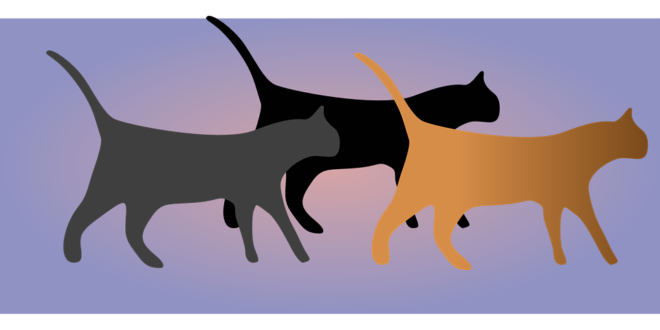

Programación Orientada a Objetos
Quién soy
URL Presentación
Archivos de Ejemplo
El Zen de Python
The Hitchhiker’s Guide to Python!

¿OOP? #$&! WTF!?
¿OOP? #$&! WTF!?
¿OOP? #$&! WTF!?
- Modelamos pensando en objetos.
- ¿Qué son objetos?
- Como en la vida real, cosas...
- ¿Qué importa de estos objetos?
- Cómo son, sus características, sus atributos.
- Qué hacen, sus acciones, sus métodos.
Características
Abstracción Encapsulamiento Polimorfismo Herencia
Procedural vs. OOP
Procedural
- Datos desacoplados de las funciones
- Pensamiento Top-Down
- Datos vienen con funciones
- Herencia y Encapsulamiento
Glosario
- Clase: tipos de objetos.
- Objeto: instancia de la clase.
- Atributos: características del objeto.
- Métodos: las acciones que puede realizar.
Creando clases
Tenemos un ejemplo en persona.py
class Persona:
"""Abstracción de los objetos Persona"""
def __init__(self, nombre):
self.nombre = nombre
print(f"Acabo de ser creado y me llamo {self.nombre}")
def avanzar(self):
print(f"Soy {self.nombre} y voy hacia adelante!")
Probando la clase
Tenemos un ejemplo en prueba_persona.py
#!/usr/bin/env python
import persona
sujeto1 = persona.Persona("Juan")
sujeto2 = persona.Persona("Pedro")
sujeto1.avanzar()
sujeto2.avanzar()
Polimorfismo
Tenemos un ejemplo en prueba_polimorfismo.py, persona.py, reptil.py
#!/usr/bin/python
import persona
import reptil
sujeto = persona.Persona("Jorge")
animal = reptil.Reptil("Pitón")
sujeto.avanzar()
animal.avanzar()
Encapsulamiento
- No hay modificadores de acceso.
- "We are all consenting adults"
- Name Mangling: PEP 8
público_semi_privado__privado- Propiedades
Encapsulando
Tenemos un ejemplo en encapsulamiento.py. Y otro ejemplo usando Propiedades en encapsulamiento_property.py
class Encapsulamiento:
def __init__(self):
self.__atributo_privado = "atributo privado."
self._atributo_semi_privado = "atributo 'casi' privado."
self.atributo_publico = "atributo público."
def publico(self):
return "Este es un método Público"
def _semi_privado(self):
return "Este es un método Semi Privado"
def __privado(self):
return "Este es un método Privado"Herencia
Tenemos un ejemplo en trabajador.py . Y para probarlo prueba_trabajador.py
class Trabajador:
def __init__(self, nombre):
self.nombre = nombre
def trabajar(self):
print(f"-{self.nombre}: Trabajo muy duro!" + \
" Como un esclavo!")
class Jubilado(Trabajador):
"""Hereda de trabajador y sobreescribe trabajar()"""
def trabajar(self):
print(f"-{self.nombre}: Ya no trabajo! Soy JUBILADO!!")
class Menor(Trabajador):
def trabajar(self):
print(f"-{self.nombre}: EXPLOTADOR!!!!")
Herencia Múltiple
Tenemos un ejemplo en multiple.py Y para probar con prueba_multiple.py
class Persona:
def __init__(self, edad):
self.edad = edad
class Empleado(Persona, trabajador.Trabajador):
def __init__(self, nombre, edad):
super().__init__(edad)
self.nombre = nombre
def identidad(self):
print(f"Soy {self.nombre} y tengo {self.edad} años")
Más recursos para aprender Python
- Getting Started with Python: Coursera.
- Introduction to Python: Absolute Beginner: EdX.
- Curso Maestro de Python 3: Aprende Desde Cero: Udemy.
- freeCodeCamp Python: comunidad de aprendizaje.
- Codecademy: academia comunitaria en línea.
- Exercism: otra comunidad comunitaria de aprendizaje.
- Koding: entorno de desarrollo en línea.
- Learn Python the Hard Way: libro en línea.
- Learn Python: libro y ejemplos en línea.
- Zetcode: tutoriales en línea.
- Python Anywhere: deployá en línea.
- Tutorial Django Girls: aprendé Django.
- Mi Blog: recursos útiles.
URL Presentación
Archivos de Ejemplo
GRACIAS
Leandro E. Colombo Viña

Este trabajo está licenciado bajo Creative Commons Attribution-NonCommercial-ShareAlike 4.0 International License.